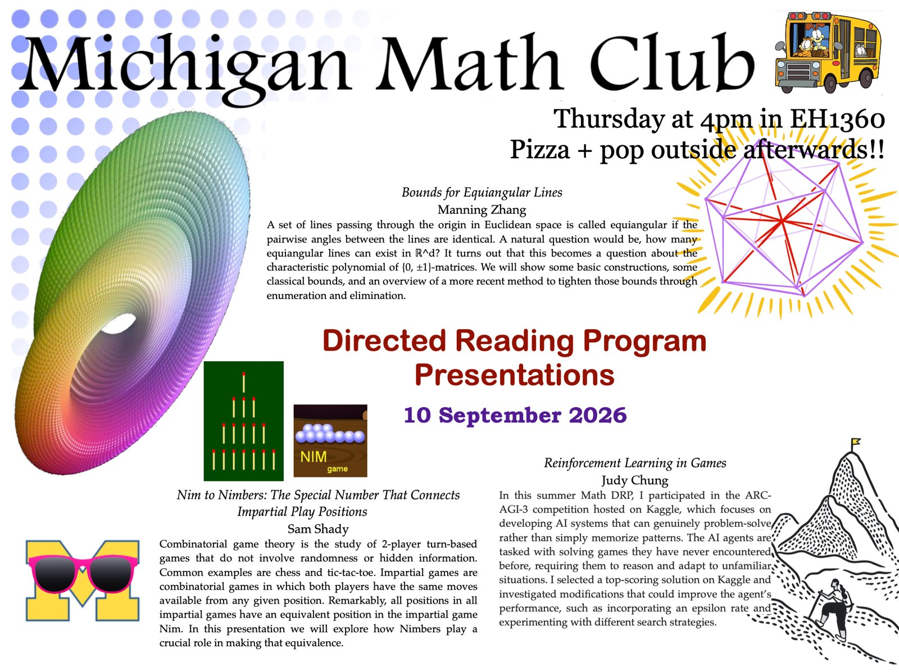

Math
Speaking at Michigan Math Club
I’m excited to announce that I’ve been selected as one of the DRP mentees to give an expanded version of my chalk talk for the Michigan Math Club next Thursday, September 10, at 4:00 p.m. in East Hall, Room 1360. Here’s the poster!
